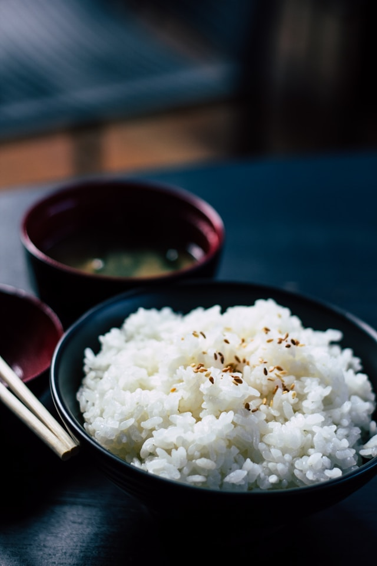
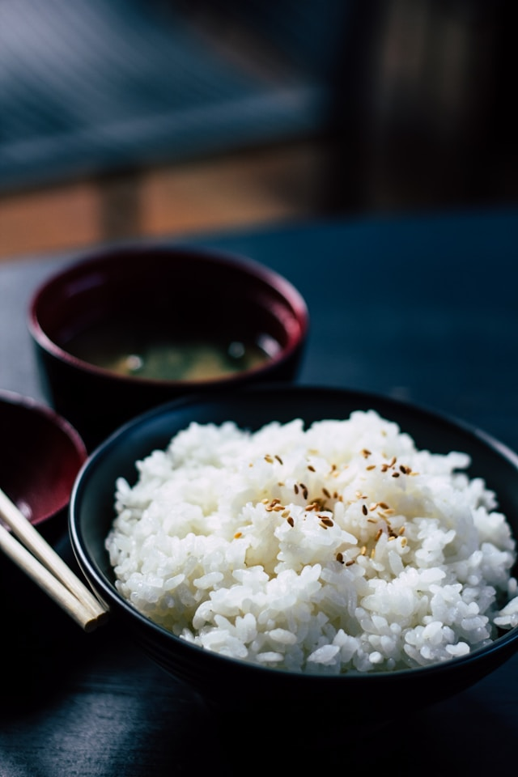
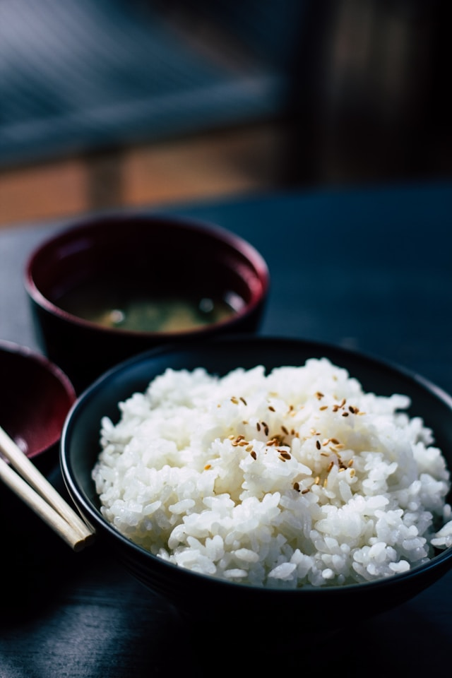
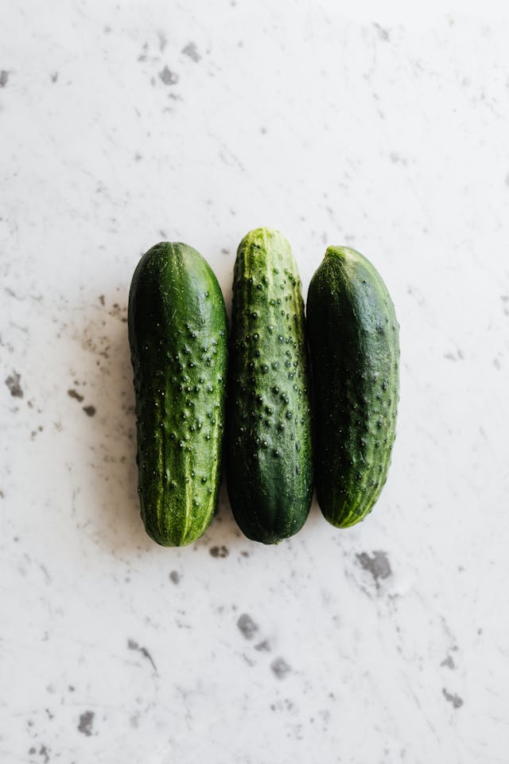
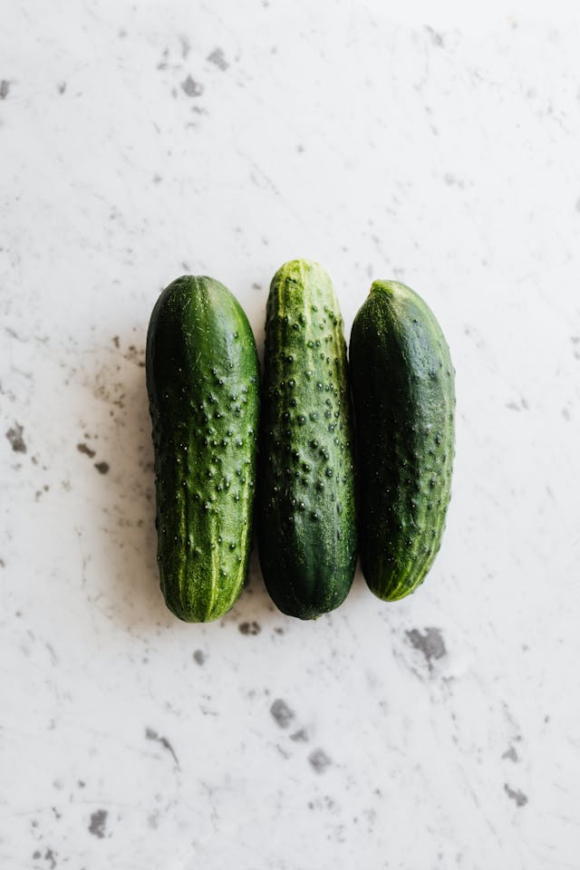

carbonhydrates
It is one of the 7 classes of food. This is made up of carbon, hydrogen and oxygen. Source of carbohydrates.
- rice
- yam
- maize
- potatoes
- bread
 

It is one of the 7 classes of food. This is made up of carbon, hydrogen and oxygen. Source of carbohydrates.

Protein is one of the organic foodstuffs, with its end product of digestion as amino- acids. It is found in both plant and animal food.


Most of the fats in our diet come from animal while most of the oil come from plant, oil is liquid while fat is solid at room temperature


Vitamins are essential substance necessary for body maintenance and good health.


Fiber-rich foods have a mix of different fiber types. Some fiber helps keep stool moving in the large intestine.


Minerals are very important because the body needs them for normal development and for regulation of metabolic process.The principal mineral includes calcium, iron, sodium, iodine, phosphorous, fluorine.
 
